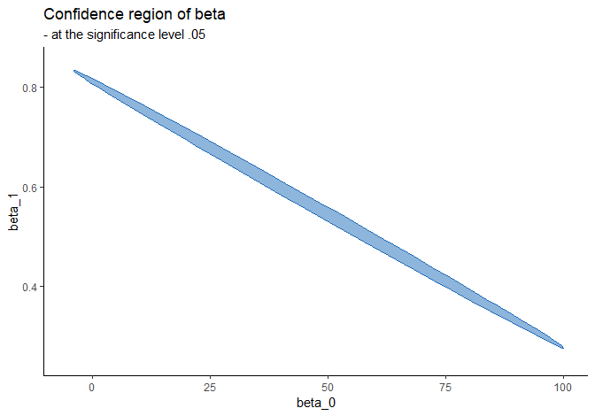

The following external R packages and data are used:
library(dplyr)
library(ggplot2)
ddply <- plyr::ddply
gather <- tidyr::gather
data(frets, package = 'boot')1. Introduction
In this document, different types of confidence regions will be visualized.
2. Visualizations
The purpose of this document is to understand what a 95% confidence interval/region is.
Case 1: confidence interval for \(\mu\)
Suppose \(X_i \stackrel{iid}{\sim} N(\mu, \sigma^2)\). One can onstruct a 95% confidence interval for \(\mu\) as: \[CI_{\mu, .95} = \Big(\overline{X} - \frac{S}{\sqrt{n}} t_{.975, n - 1}, \text{ } \overline{X} + \frac{S}{\sqrt{n}} t_{.975, n - 1}\Big)\] where \(S = \sqrt{S^2}\) and \(t_{.975, n - 1} = t^*\) is the value that satisfies \(P(T \leq t^*) = .975\), \(T \sim t_{n - 1}\). The meaning of \(P(\mu \in CI_{\mu, .95}) = .95\) is that the probability of the true parameter \(\mu\) being contained in this random interval \(CI_{\mu, .95}\) (i.e. interval constructed with random variables) is \(.95\), or \(95\%\).
If this CI is constructed with data and not random variables, then \(P(\mu \in CI_{\mu, .95}) = .95\) makes no sense because \(CI_{\mu, .95}\) is then a fixed interval. When using data: \[P(\mu \in CI_{\mu, .95}) = P \Big(\mu \in (\overline{x} - \frac{s}{\sqrt{n}} t_{.975, n - 1}, \text{ } \overline{x} + \frac{s}{\sqrt{n}} t_{.975, n - 1}) \Big) = I(\mu \in CI_{\mu, .95})\] since a constant \(\mu\) is either contained in \(CI_{\mu, .95}\) or not. The meaning of a 95% CI constructed with data is that if we replicate the same experiment or a data-generating process 100 times, and compute CIs in each replication in the same manner, then out of those 100, about 95 of them will contain the true parameter \(\mu\).
The plot below explains what this means. To simulate an unknown variance, I will use \(\sigma^2 = u\) where \(u\) is some sample generated from \(\text{Unif}(.5, 1.5)\):
set.seed(1024)
# Settings
conf_lvl <- .95
num_of_ci <- 100
n <- 1000
true_mean <- 0
true_var <- runif(1, .5, 5) # i.e. we don't know the true variance
# Collect lower and upper bounds of CI's
CI_collections <- NULL
t_star <- qt((1 + conf_lvl) / 2, df = n - 1)
for (i in 1:num_of_ci) {
X <- rnorm(n, mean = true_mean, sd = sqrt(true_var))
lower <- mean(X) - (sd(X) / sqrt(n)) * t_star
upper <- mean(X) + (sd(X) / sqrt(n)) * t_star
contains <- lower < true_mean && true_mean < upper
CI_collections <- rbind(CI_collections, c(lower, upper, contains))
}
# Plot CI's
CI_collections %>%
'colnames<-'(c('lower', 'upper', 'contains')) %>%
as_tibble() %>%
mutate(
CI_number = 1:num_of_ci,
contains = as.logical(contains)
) %>%
gather(key, value, -(CI_number:contains)) %>%
ggplot(aes(x = CI_number)) +
geom_line(aes(y = value, group = CI_number, col = contains)) +
labs(x = 'Dataset', y = 'CI') +
theme(legend.position = 'top') +
guides(col = guide_legend(title = 'Contains 0'))
100 replications are made. In each run, I generate 1000 random samples from \(N(0, \sigma^2 = u)\), compute \(CI_{\mu, .95}\), and see if it contains \(\mu = 0\). We see that out of 100 replications, 4 of them do not contain \(\mu = 0\), i.e. 96 out of 100 contain the true parameter.
Case 2: simple linear regression
Consider a simple linear regression with frets dataset: \[y = \beta_0 + \beta_1 x + \varepsilon\]
## Observations: 25
## Variables: 4
## $ l1 <dbl> 191, 195, 181, 183, 176, 208, 189, 197, 188, 192, 179, 183,...
## $ b1 <dbl> 155, 149, 148, 153, 144, 157, 150, 159, 152, 150, 158, 147,...
## $ l2 <dbl> 179, 201, 185, 188, 171, 192, 190, 189, 197, 187, 186, 174,...
## $ b2 <dbl> 145, 152, 149, 149, 142, 152, 149, 152, 159, 151, 148, 147,...The data consists of the length and breadth of heads of an adult brother pair in 25 randomly sampled families. All measurements are expressed in millimetres. Let’s take \(x =\) l1 and \(y =\) b1, and ask: “Is there a linear relationship between the eldest son’s breadth and length of his head?”
F-statistic gives a confidence region under \(H_0: \boldsymbol{\beta} = \mathbf{c}\) vs. \(H_1: \boldsymbol{\beta} \neq \mathbf{c}\): \[F = \frac{(\hat{\boldsymbol{\beta}} - \mathbf{c})^T(X^T X)(\hat{\boldsymbol{\beta}} - \mathbf{c})/k}{Y^T (I - H) Y / (n - k)} \sim F_{k, n - k}\] where, in our case, \(k = 2\) and \(n = 25\). A \(\gamma\)-level confidence region is the set of all \(\mathbf{c}\)’s where: \[F > F_{1 - \gamma} (k, n - k)\] Let \(\gamma = .95\) and \(\mathbf{c} = \mathbf{0}\).
F_stat is a function that computes \(F\)-statistic:
F_stat <- function(X, Y, c, level = .95) {
n <- nrow(X)
k <- ncol(X)
if (missing(c)) {c <- rep(0, k)}
Betahat <- solve(t(X) %*% X, t(X) %*% Y)
I_n <- diag(1, n)
H <- X %*% solve(t(X) %*% X) %*% t(X)
numer <- t(Betahat - c) %*% (t(X) %*% X) %*% (Betahat - c) / k
denom <- (t(Y) %*% (I_n - H) %*% Y) / (n - k)
f_stat <- (numer / denom)[1, 1]
list(
c = c,
f_stat = f_stat, df1 = k, df2 = n - k,
p_val = pf(f_stat, df1 = k, df2 = n - k, lower = F)
)
}CIs for each \(\beta_i\) are computed with the CIs function:
CIs <- function(X, Y, c, level = .95, has_intercept = T) {
n <- nrow(X)
k <- ncol(X)
if (missing(c)) {c <- rep(0, k)}
Betahat <- solve(t(X) %*% X, t(X) %*% Y)
I_n <- diag(1, n)
H <- X %*% solve(t(X) %*% X) %*% t(X)
CI <- matrix(rep(0, k * 2), ncol = 2)
for (i in 1:k) {
betahat_i <- Betahat[i, ]
se_i <- sqrt(
((t(Y) %*% (I_n - H) %*% Y) / (n - k)) *
solve(t(X) %*% X)[i, i]
)
t_star <- qt((1 + level) / 2, df = n - k)
CI[i, ] <- c(betahat_i - se_i * t_star, betahat_i + se_i * t_star)
}
colnames(CI) <- c('lower', 'upper')
if (has_intercept) {
rowname <- paste0('b', 0:(k - 1))
} else {
rowname <- paste0('b', 1:k)
}
rownames(CI) <- rowname
CI
}The CIs for \(\beta_0\) and \(\beta_1\) are:
## lower upper
## b0 6.9732947 89.1933836
## b1 0.3337337 0.7758577F_stats(x, y) computes \(F\)-statistic at every \(\mathbf{c}\) in the cartesian product of x and y. It computes the p-value at each \(\mathbf{c}\) as well:
x <- seq(-5, 100, by = .1)
y <- seq(.25, .85, by = .001)
F_stats <- function(x, y) {
results <- lapply(
x,
function(xd) {
t(sapply(
y,
function(yd) {
result <- F_stat(X, Y, c(xd, yd))
c(result$c, result$p_val)
}
))
}
)
'colnames<-'(Reduce('rbind', results), c('b0', 'b1', 'p_val'))
}
results <- F_stats(x, y)
results <- as_tibble(results)results is saved as f_stats.csv, which can be downloaded from here.
The following blue ellipse is a set of points whose p-values are greater than \(.05\), i.e. dots that belong in the 95% confidence region under \(H_0: \boldsymbol{\beta} = \mathbf{c}\):
ggplot(
results,
aes(x = b0, y = b1, col = p_val > .05)
) +
geom_point() +
scale_colour_manual(values = c('transparent', '#1E6BB8')) +
labs(
x = 'beta_0', y = 'beta_1', title = 'Confidence region of beta',
subtitle = '- at the significance level .05'
) +
theme(legend.position = 'none')
Whenever the null testing value \(\mathbf{c}\) in \(H_0: \boldsymbol{\beta} = \mathbf{c}\) belongs to this blue region, we cannot reject the null at the significance level \(.05\).
The following code finds points on the boundary of the confidence region so that the plot is able to connect those dots and color the enclosed area using fill aesthetic 1:
# Finding boundary points
find_hull <- function(df) {df[chull(df$b0, df$b1), ]}
results2 <- results %>% mutate(cr = ifelse(p_val > .05, T, F))
hulls <- results2 %>% ddply('cr', find_hull)
# Connecting boundary points
ggplot(results2, aes(x = b0, y = b1, color = cr, fill = cr)) +
# geom_point() +
geom_polygon(data = hulls, alpha = .5) +
scale_colour_manual(values = c('transparent', '#1E6BB8')) +
scale_fill_manual(values = c('transparent', '#1E6BB8')) +
labs(
x = 'beta_0', y = 'beta_1', title = 'Confidence region of beta',
subtitle = '- at the significance level .05'
) +
theme_classic() +
theme(legend.position = 'none')
There are two points to keep in mind:
- the confidence region is not a rectangle but an ellipse since \(\hat{\beta}_0\) and \(\hat{\beta}_1\) are correlated.
- the interpretation of confidence region is the same as the CI’s: if we replicate this experiment 100 times and compute the confidence region in the same manner (using \(F\)-statistic in this case), then out of those 100 regions, around 95 of them are expected to contain the true parameter \(\boldsymbol{\beta} = (\beta_0, \beta_1)\).
ASIDE: the following function from ggConvexHull package does the same job. Click here to see the repository:
# library(devtools)
# devtools::install_github("cmartin/ggConvexHull")
library(ggConvexHull)
ggplot(results2, aes(x = b0, y = b1, col = cr, fill = cr)) +
geom_convexhull(alpha = .5) +
scale_colour_manual(values = c('transparent', '#1E6BB8')) +
scale_fill_manual(values = c('transparent', '#1E6BB8')) +
labs(
x = 'beta_0', y = 'beta_1', title = 'Confidence region of beta',
subtitle = '- at the significance level .05'
) +
theme_classic() +
theme(legend.position = 'none')
Session info
R session info:
## R version 3.6.1 (2019-07-05)
## Platform: x86_64-w64-mingw32/x64 (64-bit)
## Running under: Windows 10 x64 (build 18362)
##
## Matrix products: default
##
## locale:
## [1] LC_COLLATE=English_Canada.1252 LC_CTYPE=English_Canada.1252
## [3] LC_MONETARY=English_Canada.1252 LC_NUMERIC=C
## [5] LC_TIME=English_Canada.1252
##
## attached base packages:
## [1] stats graphics grDevices utils datasets methods base
##
## other attached packages:
## [1] ggConvexHull_0.1.0 ggplot2_3.2.0 dplyr_0.8.3
## [4] reticulate_1.12 rmarkdown_1.14 magrittr_1.5
## [7] itertools2_0.1.1
##
## loaded via a namespace (and not attached):
## [1] Rcpp_1.0.1 plyr_1.8.4 compiler_3.6.1 pillar_1.4.2
## [5] prettydoc_0.3.0 iterators_1.0.10 tools_3.6.1 zeallot_0.1.0
## [9] digest_0.6.20 jsonlite_1.6 evaluate_0.14 tibble_2.1.3
## [13] gtable_0.3.0 lattice_0.20-38 png_0.1-7 pkgconfig_2.0.2
## [17] rlang_0.4.0 Matrix_1.2-17 cli_1.1.0 rstudioapi_0.10
## [21] yaml_2.2.0 xfun_0.8 withr_2.1.2 stringr_1.4.0
## [25] xml2_1.2.0 knitr_1.23 vctrs_0.2.0 hms_0.5.0
## [29] grid_3.6.1 tidyselect_0.2.5 glue_1.3.1 R6_2.4.0
## [33] fansi_0.4.0 readr_1.3.1 tidyr_0.8.3 purrr_0.3.2
## [37] backports_1.1.4 scales_1.0.0 htmltools_0.3.6 assertthat_0.2.1
## [41] colorspace_1.4-1 labeling_0.3 utf8_1.1.4 stringi_1.4.3
## [45] lazyeval_0.2.2 munsell_0.5.0 crayon_1.3.4